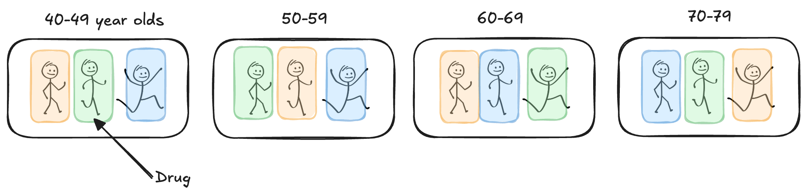
Expanding Treatment & Design Structures
What if…
Suppose we wish to compare three drugs (Placebo, Atorvastatin, Rosuvastatin) on their effectiveness at controlling cholesterol (change, post - pre) in adults. We decide to block on age group to reduce variability, using age ranges (40-49, 50-59, 60-69, 70-79).
As a RCBD, one adult in each age group is assigned each of the 3 drug treatments:

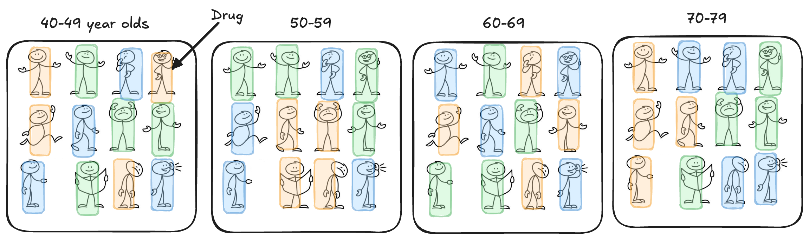
Generalized Block Design
is used when we want or need to replicate within the block. This allows us to compare blocks while still accounting for block-to-block variation and assessing potential interactions between treatments and blocks.
Treatment Structure One-way with three levels of drug (Placebo, Atorvastatin, Rosuvastatin); t = 3.
Experimental Structure Drug is randomly assigned to four adults (\(r_m = 4\)) (e.u.) within four age groups (40-49, 50-59, 60-69, 70-79) (\(M = 4\)) in a generalized block design for total replications of \(r = M\cdot r_m = 16\). The change in cholesterol (post - pre) is measured once for each adult (m.u.).
subject_id age_group drug rep_in_cell cholesterol_change
1 1 40-49 Placebo 1 -3.752901
2 2 40-49 Placebo 2 -2.510216
3 3 40-49 Placebo 3 -4.624835
4 4 40-49 Placebo 4 -3.209782
5 5 40-49 Atorvastatin 1 -16.919306
6 6 40-49 Atorvastatin 2 -18.908985Additive Model
\[y_{im} = \mu + \tau_i + \rho_m + \epsilon_{im}\]
Analysis of Variance Table
Response: cholesterol_change
Df Sum Sq Mean Sq F value Pr(>F)
drug 2 2319.0 1159.51 32.628 2.814e-09 ***
age_group 3 1025.7 341.90 9.621 5.879e-05 ***
Residuals 42 1492.5 35.54
---
Signif. codes: 0 '***' 0.001 '**' 0.01 '*' 0.05 '.' 0.1 ' ' 1Additive Model
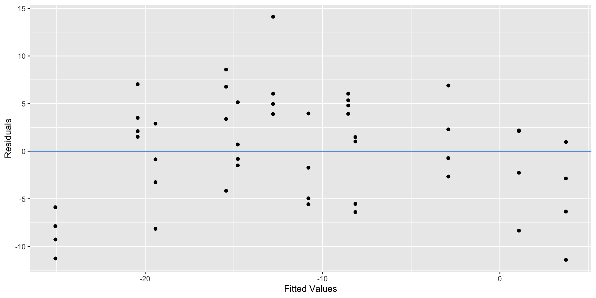
\[y_{imk} = \mu + \tau_i + \rho_m + \tau\rho_{im} + \epsilon_{imk}\]
\(\text{ with } \epsilon_{imk} \overset{\text{ iid}}{\sim} N(0, \sigma^2)\)
for \(i = 1, 2, 3\), \(m = 1, 2, 3, 4\), and \(k = 1, 2, 3, 4.\)
| Source of Variation | DF |
|---|---|
Analysis of Variance Table
Response: cholesterol_change
Df Sum Sq Mean Sq F value Pr(>F)
drug 2 2319.01 1159.51 68.9700 4.856e-13 ***
age_group 3 1025.70 341.90 20.3369 7.007e-08 ***
drug:age_group 6 887.33 147.89 8.7967 6.338e-06 ***
Residuals 36 605.22 16.81
---
Signif. codes: 0 '***' 0.001 '**' 0.01 '*' 0.05 '.' 0.1 ' ' 1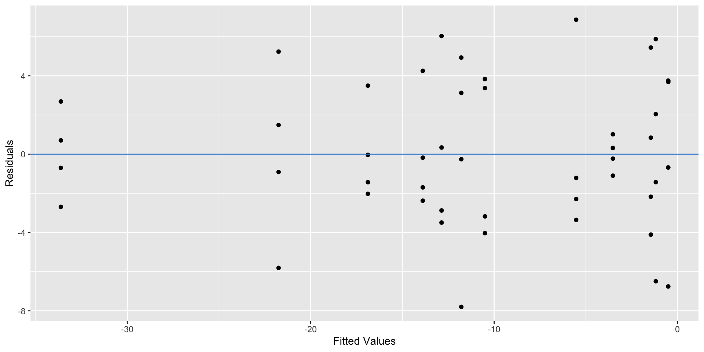
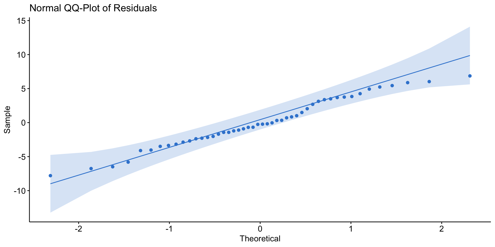
age_group = 40-49:
drug emmean SE df lower.CL upper.CL .group
Placebo -3.524 2.05 36 -8.66 1.609 A
Atorvastatin -16.882 2.05 36 -22.02 -11.749 B
Rosuvastatin -33.624 2.05 36 -38.76 -28.491 C
age_group = 50-59:
drug emmean SE df lower.CL upper.CL .group
Placebo -1.458 2.05 36 -6.59 3.676 A
Atorvastatin -13.891 2.05 36 -19.02 -8.758 B
Rosuvastatin -21.753 2.05 36 -26.89 -16.620 C
age_group = 60-69:
drug emmean SE df lower.CL upper.CL .group
Placebo -0.505 2.05 36 -5.64 4.628 A
Rosuvastatin -11.790 2.05 36 -16.92 -6.657 B
Atorvastatin -12.867 2.05 36 -18.00 -7.733 B
age_group = 70-79:
drug emmean SE df lower.CL upper.CL .group
Placebo -1.183 2.05 36 -6.32 3.950 A
Rosuvastatin -5.528 2.05 36 -10.66 -0.395 AB
Atorvastatin -10.500 2.05 36 -15.63 -5.366 B
Confidence level used: 0.95
Conf-level adjustment: sidak method for 3 estimates
P value adjustment: tukey method for comparing a family of 3 estimates
significance level used: alpha = 0.05
NOTE: If two or more means share the same grouping symbol,
then we cannot show them to be different.
But we also did not show them to be the same. drug emmean SE df lower.CL upper.CL .group
Placebo -1.67 1.03 36 -4.23 0.899 A
Atorvastatin -13.54 1.03 36 -16.10 -10.968 B
Rosuvastatin -18.17 1.03 36 -20.74 -15.607 C
Results are averaged over the levels of: age_group
Confidence level used: 0.95
Conf-level adjustment: sidak method for 3 estimates
P value adjustment: tukey method for comparing a family of 3 estimates
significance level used: alpha = 0.05
NOTE: If two or more means share the same grouping symbol,
then we cannot show them to be different.
But we also did not show them to be the same. Field Design
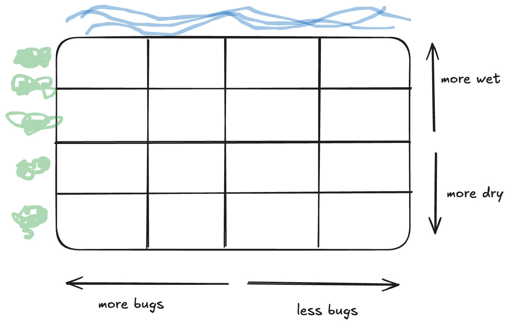
A MS student in Horticulture at Cal Poly, carried out a study on green roof technology. The purpose of the study was to investigate the effectiveness of 3 different growing media (Freedom Square, FLL standard and High Organic Matter) for establishing sedum on rooftops. (Sedum is a type of flowering succulent.) Lots of research in this area is being done, because planting on rooftops can help with storm water management, energy conservation and reduction of the surrounding air temperature. The response was the coverage % of sedum after a period of 8-weeks of growing time.
The study was carried out in a replicated (3 reps) Latin Square on the platforms (shown below). The platforms must be set at an angle to help with drainage, but there were concerns that location within a platform would have an effect on growth, both in the N-S and E-W directions. So each platform was partitioned into a 3x3 grid as shown below
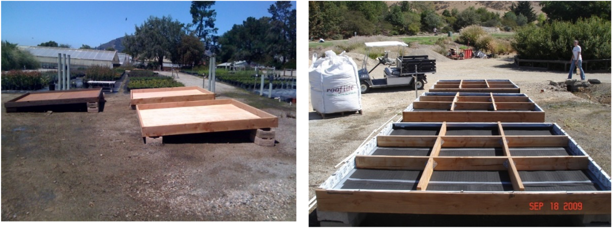
For one platform, identify..
Response variable:
Factor(s) & level(s):
Experimental unit:
Blocking variable 1:
Blocking variable 2:
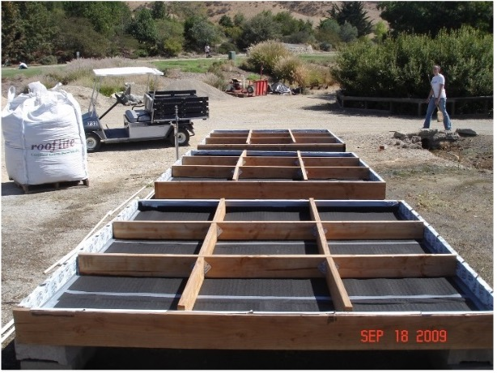
We implement a “restricted randomization”
If \(t\) treatments
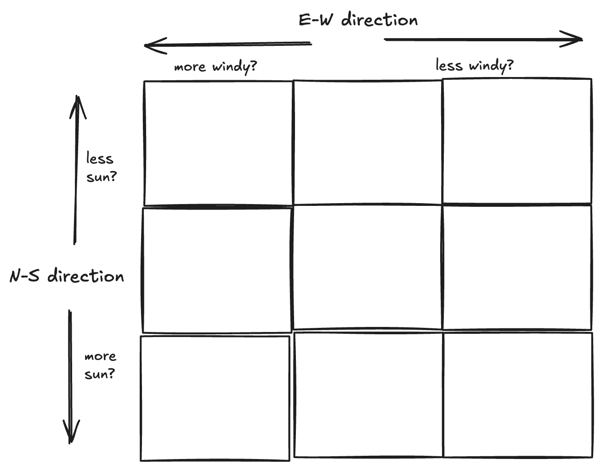
| platform_replicate | ns_position | ew_position | growing_media | coverage_pct |
|---|---|---|---|---|
| 1 | 1 | 1 | Freedom Square | 44.4 |
| 1 | 1 | 2 | High Organic Matter | 71.6 |
| 1 | 1 | 3 | FLL Standard | 61.4 |
| 1 | 2 | 1 | High Organic Matter | 75.1 |
| 1 | 2 | 2 | FLL Standard | 57.1 |
| 1 | 2 | 3 | Freedom Square | 47.4 |
| 1 | 3 | 1 | FLL Standard | 57.1 |
| 1 | 3 | 2 | Freedom Square | 45.4 |
| 1 | 3 | 3 | High Organic Matter | 56.9 |
\[y_{ijk}=\mu + \tau_i + r_j + c_k + \epsilon_{ijk} \text{ with } \epsilon_{ijk} \text{ iid} \sim N(0,\sigma^2)\]
For \(i=1,2,3; j=1,2,3; k=1,2,3\)
where:
| Source of Variation | DF | SS | MS | F |
|---|---|---|---|---|
| Rows* | rows - 1 | SSrow | MSrow | MSrow/MSE |
| Columns* | cols - 1 | SScol | MScol | MScol/MSE |
| Treatment | t - 1 | SSTrt | MSTrt | MSTrt/MSE |
| Rows x Cols x Treatments — error | Use subtraction! | SSE | MSE | |
| Total | N - 1 |
*Note: in only one Latin Square replicate, the number of row blocks and column blocks are equal to the number of treatments (i.e., rows = cols = t)
| Source of Variation | DF: 3 rows x 3 columns = 9 e.u - 1 = 8 total |
|---|---|
Call:
lm(formula = coverage_pct ~ growing_media + ns_position + ew_position,
data = greenroof_data_platform1)
Residuals:
1 2 3 4 5 6 7 8 9
-4.578 1.322 3.256 3.256 -4.578 1.322 1.322 3.256 -4.578
Coefficients:
Estimate Std. Error t value Pr(>|t|)
(Intercept) 61.7778 6.2333 9.911 0.010 *
growing_mediaFreedom Square -12.8000 5.7709 -2.218 0.157
growing_mediaHigh Organic Matter 9.3333 5.7709 1.617 0.247
ns_position2 0.7333 5.7709 0.127 0.911
ns_position3 -6.0000 5.7709 -1.040 0.408
ew_position2 -0.8333 5.7709 -0.144 0.898
ew_position3 -3.6333 5.7709 -0.630 0.593
---
Signif. codes: 0 '***' 0.001 '**' 0.01 '*' 0.05 '.' 0.1 ' ' 1
Residual standard error: 7.068 on 2 degrees of freedom
Multiple R-squared: 0.8942, Adjusted R-squared: 0.5768
F-statistic: 2.817 on 6 and 2 DF, p-value: 0.285Why Replicate?
Replication increases the error degrees of freedom, improving the precision of estimates \(\rightarrow\) increases statistical power.
In a Latin Square design, replication can be achieved in several ways:
Blocking to account for:
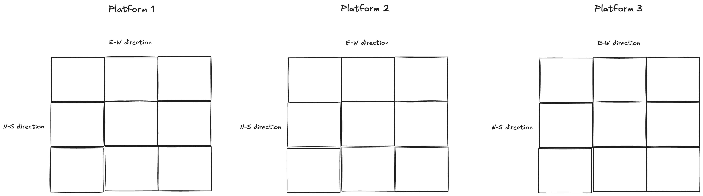
\[y_{ijkl}=\mu+\tau_i+\rho_m+ r(\rho)_{mk}+c(\rho)_{ml}+\epsilon_{imkl} \text{ with } \epsilon_{imk} \text{ iid}\sim N(0,\sigma^2 )\]
For \(i=1,2,3; m=1,2,3; k=1,2,3; l=1,2,3\)
where:
| Source of Variation | DF | SS | MS | F |
|---|---|---|---|---|
| Global Block | blks - 1 | SSblk | MSblk | MSblk/MSE |
| Rows(Global Block)* | (rows - 1)(blks) | SSrow | MSrow | MSrow/MSE |
| Columns(Global Block)* | (cols - 1)(blks) | SScol | MScol | MScol/MSE |
| Treatment | t - 1 | SSTrt | MSTrt | MSTrt/MSE |
| Error | Use subtraction! | SSE | MSE | |
| Total | N - 1 |
| Source of Variation | DF: 3 rows x 3 columns = 9 e.u - 1 = 8 total |
|---|---|
Call:
lm(formula = coverage_pct ~ growing_media + platform_replicate +
platform_replicate/ns_position + platform_replicate/ew_position,
data = greenroof_data)
Residuals:
Min 1Q Median 3Q Max
-8.2296 -2.0630 -0.3963 2.6537 5.7148
Coefficients:
Estimate Std. Error t value Pr(>|t|)
(Intercept) 60.58519 4.57774 13.235 1.16e-07 ***
growing_mediaFreedom Square -7.95556 2.71958 -2.925 0.0152 *
growing_mediaHigh Organic Matter 8.06667 2.71958 2.966 0.0141 *
platform_replicate2 -0.76667 6.08117 -0.126 0.9022
platform_replicate3 7.55556 6.08117 1.242 0.2424
platform_replicate1:ns_position2 0.73333 4.71046 0.156 0.8794
platform_replicate2:ns_position2 -3.53333 4.71046 -0.750 0.4705
platform_replicate3:ns_position2 -5.43333 4.71046 -1.153 0.2755
platform_replicate1:ns_position3 -6.00000 4.71046 -1.274 0.2316
platform_replicate2:ns_position3 -4.03333 4.71046 -0.856 0.4119
platform_replicate3:ns_position3 -7.40000 4.71046 -1.571 0.1473
platform_replicate1:ew_position2 -0.83333 4.71046 -0.177 0.8631
platform_replicate2:ew_position2 1.76667 4.71046 0.375 0.7155
platform_replicate3:ew_position2 -5.30000 4.71046 -1.125 0.2868
platform_replicate1:ew_position3 -3.63333 4.71046 -0.771 0.4583
platform_replicate2:ew_position3 -0.03333 4.71046 -0.007 0.9945
platform_replicate3:ew_position3 -3.83333 4.71046 -0.814 0.4347
---
Signif. codes: 0 '***' 0.001 '**' 0.01 '*' 0.05 '.' 0.1 ' ' 1
Residual standard error: 5.769 on 10 degrees of freedom
Multiple R-squared: 0.8175, Adjusted R-squared: 0.5254
F-statistic: 2.799 on 16 and 10 DF, p-value: 0.05161Analysis of Variance Table
Response: coverage_pct
Df Sum Sq Mean Sq F value Pr(>F)
growing_media 2 1155.22 577.61 17.3547 0.0005598 ***
platform_replicate 2 63.15 31.57 0.9487 0.4195233
platform_replicate:ns_position 6 199.03 33.17 0.9967 0.4771188
platform_replicate:ew_position 6 73.03 12.17 0.3657 0.8846661
Residuals 10 332.83 33.28
---
Signif. codes: 0 '***' 0.001 '**' 0.01 '*' 0.05 '.' 0.1 ' ' 1 growing_media emmean SE df lower.CL upper.CL .group
High Organic Matter 66.7 1.92 10 61.2 72.2 A
FLL Standard 58.7 1.92 10 53.2 64.2 B
Freedom Square 50.7 1.92 10 45.2 56.2 C
Results are averaged over the levels of: ew_position, ns_position, platform_replicate
Confidence level used: 0.95
Conf-level adjustment: sidak method for 3 estimates
P value adjustment: tukey method for comparing a family of 3 estimates
significance level used: alpha = 0.05
NOTE: If two or more means share the same grouping symbol,
then we cannot show them to be different.
But we also did not show them to be the same. Treat blocks as random when:
Note
Crossover designs are one of the most common applications of Latin Square experimental structures. In these designs, each subject receives multiple treatments over different time periods, serving as their own block.
Suppose we have 2 medications (new medication, N vs. standard medication, S). Patients are recruited (100 patients) into the study. Each patient receives one of the medications for the first period of time. Then, each patient, crosses over to the other medication during a second time period. Patients are randomly assigned to one of the possible sequences: NS or SN
Typically, there will be a washout period between the treatments so that medication that was assigned in the first time period has time to clear out of the patient’s body before they begin on the second medication.
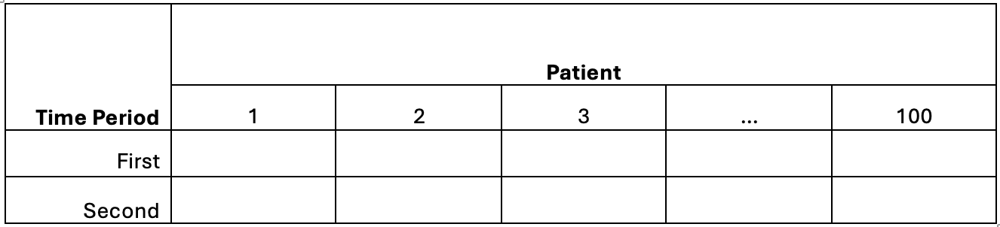
Works best when:
Threats: